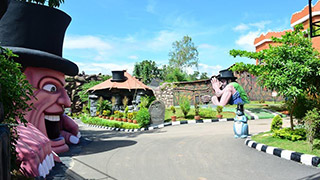
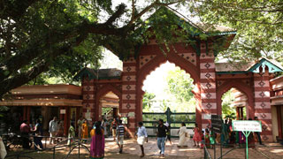
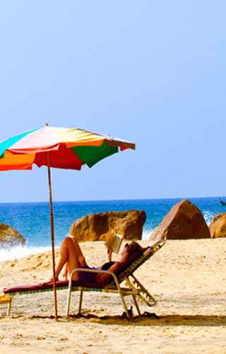
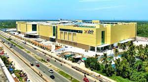

-
Magic Planet- the museum of magic, is totally a new concept located at the Kinfra Film and Video Park situated at Kazhakuttom, Thiruvananthapuram, Kerala. It was officially inaugurated on October 31st 2014 by then Chief Minister of Kerala Mr. Oommen Chandy, with the laudable magical act of Padmasree Mohanlal in the presence of other ministers and people from different walks of life.
Magic Plant
-

Zoological park
The Thiruvananthapuram Zoo is located in the city of Thiruvananthapuram, the capital of Kerala, India. It occupies 55 acres of woodland, lakes, and lawns.
-
Shankumugham Beach is a beach in Thiruvananthapuram district of Kerala, south India. The beach is on the western side of Thiruvananthapuram (Trivandrum) and very near to Trivandrum International Airport.

Shankhumugham Beach
-

kovalam Beach
Kovalam is a small coastal town in the southern Indian state of Kerala, south of Thiruvananthapuram. At the southern end of Lighthouse Beach is a striped lighthouse with a viewing platform. Palm-backed beaches also include Hawa Beach and Samudra Beach. Heading south, Vizhinjam Juma Masjid mosque overlooks the busy fishing harbor. Inland, Sagarika Marine Research Aquarium displays technology used in pearl production.
-
Lulu Mall Thiruvananthapuram is a shopping mall located in Thiruvananthapuram, the capital city of Kerala, India. With a total built up area of 2,000,000 sq ft, it is one of the largest malls in India and the largest Mall in Kerala.
Lulu Mall